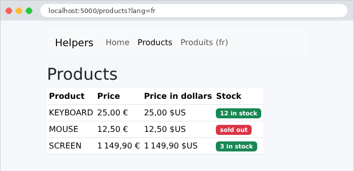
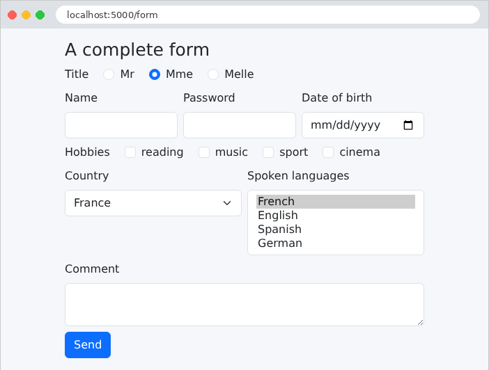
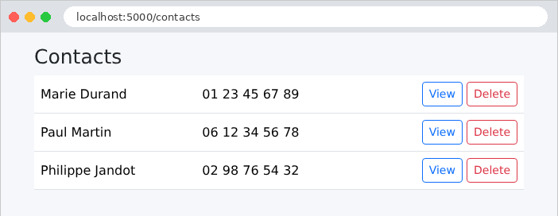
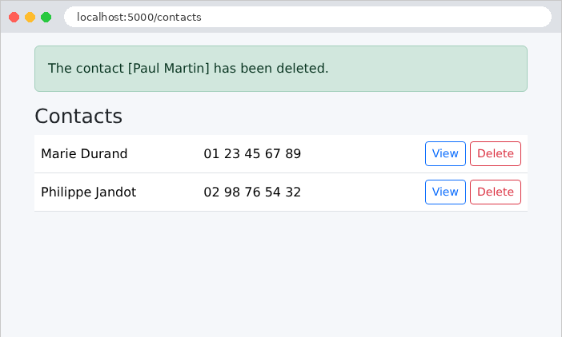
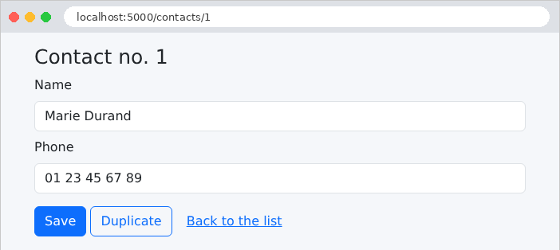

4. A view e seu modelo
Até agora, as actions geravam suas próprias respostas: texto, JSON e algumas tags HTML escritas em uma string. Em uma aplicação MVC, esse é o papel de uma view: um arquivo que descreve a página HTML, com marcadores para os dados que a action lhe passa — o modelo da view.
[Flask] vem com uma engine de views, o [Jinja2], escrito pela mesma equipe (o projeto *Pallets*). Outras engines podem ser usadas ([Mako], [Chameleon]...), mas [Jinja2] é de longe a mais usada em [Python]: ele é encontrado no [Django] (como opção), no [Ansible], em geradores de sites estáticos... É o que usamos neste curso.
Uma view [Jinja2] (a documentação a chama de *template*, um modelo de página) é um arquivo de texto — neste caso, HTML — no qual três tipos de tags são interpretados no servidor:
- [{{ expression }}]: o valor de uma expressão, inserido na página;
- [{% instruction %}]: uma instrução: condição ([if]), laço ([for]), herança de template ([extends], [block]), inclusão ([include]), macro...;
- [{# comment #}]: um comentário que não aparece na página gerada.
Todo o resto é copiado como está. A sintaxe das expressões é semelhante à do [Python]. Isso difere do [Thymeleaf], a engine de views do curso de [Spring MVC], cujas views são arquivos HTML válidos enriquecidos com atributos [th:]; em vez disso, aproxima o [Jinja2] do [Razor] ([ASP.NET Core MVC]), que mistura HTML e código. Por padrão, o [Flask] procura as views na pasta [templates] da aplicação.
4.1. Exemplo 13: uma primeira view
| 13-first-view/
├── app.py
├── controllers/
│ └── views.py
├── models/
│ └── page.py
└── templates/
└── views/
├── index.html
└── unknown.html
|
4.1.1. O modelo da view: models/page.py
| # models/page.py: o modelo da view, os dados que a ação passa para a view
from dataclasses import dataclass
@dataclass
class PageModel:
title: str
message: str
time: str
|
O modelo da view é uma simples [dataclass] (veja o Exemplo 06): as três informações que a view exibirá. Não há obrigação de definir o modelo de uma view como uma classe: três variáveis separadas poderiam ser passadas à view. No entanto, uma classe documenta o que a view espera e permite que o editor verifique o código da action. Essa é a abordagem que o estudo de caso seguirá, em que cada view tem sua própria classe de modelo.
4.1.2. O controller: controllers/views.py
| # controllers/views.py: ações que retornam uma VIEW
from datetime import datetime
from flask import Blueprint, render_template
from models.page import PageModel
views = Blueprint("views", __name__)
# render_template: a engine Jinja2 constrói a página a partir da view
# templates/views/index.html e das variáveis passadas como parâmetros nomeados
# (aqui uma só, [model]); a página produzida é a resposta da ação
@views.get("/")
def index():
model = PageModel(
"My first view",
"This page was built by Jinja2, on the server.",
datetime.now().strftime("%H:%M:%S"))
return render_template("views/index.html", model=model)
# a mesma view com outro modelo; ou outra view, com o código 404
@views.get("/hello/<name>")
def hello(name):
if name == "unknown":
# uma tupla (página, código): a página, enviada com o código 404
return render_template("views/unknown.html", name=name), 404
model = PageModel(
f"Hello {name}",
"This time, the title of the page comes from the URL.",
datetime.now().strftime("%H:%M:%S"))
return render_template("views/index.html", model=model)
|
- linha 4: importa a função [render_template];
- linhas 16–19: a action constrói o modelo da view. [datetime.now().strftime("%H:%M:%S")]: a hora atual, formatada (veja o Exemplo 12);
- linha 20: [render_template] instrui o [Jinja2] a gerar a página: o primeiro parâmetro é o caminho da view, relativo à pasta [templates]; os parâmetros nomeados seguintes são as variáveis da view; neste caso, há apenas uma: [model]. [render_template] retorna o texto da página gerada, que se torna a resposta da action (do tipo [text/html]);
- linha 28: outra view, com uma variável diferente ([name]). A tupla [(page, 404)] envia a página com o código de status 404 (veja o Exemplo 03): uma página de erro personalizada;
- Linhas 29–33: a mesma view da action [index], com um modelo diferente. Esse é o benefício de separar as actions das views: uma única view pode ser usada por várias actions.
4.1.3. A view: templates/views/index.html
| <!doctype html>
<html lang="en">
<head>
<meta charset="utf-8">
{# {{ ... }}: o valor de uma expressão, inserido na página #}
<title>{{ model.title }}</title>
</head>
<body>
<h1>{{ model.title }}</h1>
<p>{{ model.message }}</p>
<p>Page built at {{ model.time }}.</p>
</body>
</html>
|
- linha 5: um comentário [Jinja2];
- Linha 6: [{{ model.title }}] insere o valor do atributo [title] da variável [model]. A notação de ponto do [Jinja2] é mais flexível que a do [Python]: [model.title] procura primeiro um atributo [title] e, se não o encontrar, uma chave ["title"] (se [model] for um dicionário). O código da view, portanto, não precisa saber se seu modelo é um objeto ou um dicionário.
Tudo o que é inserido por [{{ }}] é escapado: os caracteres [<], [>], [&], ["] e ['] são substituídos por suas entidades HTML. Esse é o papel que a função [escape] desempenhava no Exemplo 09, mas desta vez é automático: o [Flask] ativa o escape automático (*autoescape*) para as views cujos nomes terminam em [.html], [.htm], [.xml], [.xhtml], ou [.svg]. Isso evita que uma view insira, sem querer, na página um HTML fornecido por um usuário.
4.1.4. A view: templates/views/unknown.html
| <!doctype html>
<html lang="en">
<head>
<meta charset="utf-8">
<title>Unknown</title>
</head>
<body>
<h1>Nobody is called [{{ name }}] here.</h1>
</body>
</html>
|
Uma view não é obrigada a receber um objeto: a variável [name] é uma string.
4.1.5. Execução


A resposta bruta mostra o trabalho feito pelo [Jinja2]: as tags [{{ }}] foram substituídas por seus valores, e o comentário desapareceu (resta uma linha vazia em seu lugar; veremos no próximo exemplo como evitá-la).
| curl -i http://localhost:5000/
|
| HTTP/1.1 200 OK
Content-Type: text/html; charset=utf-8
Content-Length: 242
<!doctype html>
<html lang="en">
<head>
<meta charset="utf-8">
<title>My first view</title>
</head>
<body>
<h1>My first view</h1>
<p>This page was built by Jinja2, on the server.</p>
<p>Page built at 15:30:51.</p>
</body>
</html>
|
A página de erro “personalizada”, seguida de um nome contendo HTML ([<b>martin], codificado na URL):
| curl -i http://localhost:5000/hello/unknown
curl http://localhost:5000/hello/%3Cb%3Emartin
|
| HTTP/1.1 404 NOT FOUND
Content-Type: text/html; charset=utf-8
Content-Length: 164
<!doctype html>
<html lang="en">
<head>
<meta charset="utf-8">
<title>Unknown</title>
</head>
<body>
<h1>Nobody is called [unknown] here.</h1>
</body>
</html>
...
<title>Hello <b>martin</title>
...
<h1>Hello <b>martin</h1>
...
|
A tag [<b>] foi escapada sem que nenhuma action ou view precisasse intervir.
4.2. Exemplo 14: a linguagem Jinja2
Este exemplo combina as principais construções do [Jinja2] em uma única view.
4.2.1. O modelo e a action
| # models/basics.py: o modelo da view do exemplo 14
from dataclasses import dataclass
from decimal import Decimal
@dataclass
class Product:
name: str
price: Decimal
in_stock: bool
@dataclass
class Address:
street: str
city: str
@dataclass
class BasicsModel:
title: str
name: str
nickname: str | None
html: str
logged_in: bool
currency: str
products: list[Product]
cart: list[Product]
address: Address
|
O modelo contém valores de vários tipos: strings, [None], booleanos, listas de objetos, listas vazias e objetos que contêm outros objetos. O tipo [Decimal], do módulo padrão [decimal], representa números decimais com exatidão (ao contrário do tipo [float], para o qual [0.1 + 0.2] é igual a [0.30000000000000004]); é o tipo a usar para valores monetários.
| # controllers/basics.py: uma view que usa as principais construções do Jinja2
from decimal import Decimal
from flask import Blueprint, render_template
from models.basics import Address, BasicsModel, Product
basics = Blueprint("basics", __name__)
@basics.get("/")
def index():
model = BasicsModel(
title="Jinja2 basics",
name="Martin",
nickname=None,
html="<b>this is HTML</b>",
logged_in=True,
currency="€",
products=[
Product("Keyboard", Decimal("25"), True),
Product("Mouse", Decimal("12.5"), False),
Product("Screen", Decimal("149"), True),
],
cart=[],
address=Address("12 rue des Lilas", "Angers"))
return render_template("basics/index.html", model=model)
|
A action constrói o modelo e o passa à view. [Decimal("12.5")]: um decimal é construído a partir de uma string para evitar o uso de um [float] impreciso.
4.2.2. Configuração: app.py
| # app.py: a aplicação do exemplo 14
from flask import Flask
from controllers.basics import basics
def create_app():
app = Flask(__name__)
# as tags {% ... %} não deixam linhas em branco na página produzida:
# trim_blocks remove a quebra de linha que segue uma tag, lstrip_blocks os
# espaços que a precedem na sua linha
app.jinja_env.trim_blocks = True
app.jinja_env.lstrip_blocks = True
app.register_blueprint(basics)
return app
if __name__ == "__main__":
create_app().run(port=5000, debug=True)
|
- Linhas 12–13: [app.jinja_env] é o ambiente [Jinja2] da aplicação — o objeto que carrega e executa as views. Por padrão, uma tag [{% %}] sozinha em sua linha deixa na página gerada os espaços que a precedem e a quebra de linha que a segue: um laço produziria numerosas linhas vazias. [trim_blocks] remove a quebra de linha que segue uma tag, enquanto [lstrip_blocks] remove os espaços que a precedem. Essas duas configurações não afetam a exibição da página (o navegador ignora esses espaços em branco), mas tornam o HTML gerado mais legível. Todos os exemplos seguintes as ativam.
4.2.3. A view: templates/basics/index.html
| <!doctype html>
<html lang="en">
<head>
<meta charset="utf-8">
<title>{{ model.title }}</title>
</head>
<body>
{# {% set %}: uma variável da view; os filtros (|) transformam um valor #}
{% set total = model.products | sum(attribute="price") %}
{% set count = model.products | length %}
<h1>{{ model.title }}</h1>
{# 1. exibe um valor do modelo; None é exibido... "None": o filtro
default(text, true) substitui um valor vazio ou None. Este comentário
Jinja2 não aparece na página produzida #}
<p>1. Name: {{ model.name }} - nickname: [{{ model.nickname }}] [{{ model.nickname | default("", true) }}]</p>
{# 2. {{ }} escapa o HTML; o filtro safe o insere como está #}
<p>2a. {{ model.html }}</p>
<p>2b. {{ model.html | safe }}</p>
{# 3. uma condição #}
{% if model.logged_in %}
<p>3. You are logged in.</p>
{% else %}
<p>3. You are not logged in.</p>
{% endif %}
{# 4. um laço: [loop] descreve o estado do laço #}
<p>4. Our products:</p>
<ul>
{% for product in model.products %}
<li>no. {{ loop.index0 }}: {{ product.name }}, {{ product.price }} {{ model.currency }}
{{ "(in stock)" if product.in_stock else "(sold out)" }}
{% if loop.first %}- the first one{% endif %}
{% if loop.last %}- the last one, seen by {{ model.name }}{% endif %}
</li>
{% endfor %}
</ul>
{# 5. a lista vazia: o bloco else de um laço for #}
<p>5. Your cart:
{% for p in model.cart %}<span>{{ p.name }}</span>{% else %}it is empty.{% endfor %}
</p>
{# 6. expressões calculadas, as variáveis definidas com set e o filtro format #}
<p>6. {{ count }} products, for a total of {{ total }} {{ model.currency }};
average price: {{ "%.2f" | format(total / count) }} {{ model.currency }}</p>
{# 7. um objeto dentro de um objeto e um método Python (upper) #}
<p>7. Address: {{ model.address.street }}, {{ model.address.city.upper() }}</p>
<p>8. An email address: contact@example.com</p>
</body>
</html>
|
- Linhas 9–10: [{% set %}] cria uma variável da view. Os filtros transformam um valor: [value | filter] ou [value | filter(parameters)]. O filtro [sum(attribute="price")] soma os atributos [price] dos elementos de uma lista; o filtro [length] retorna o comprimento de uma lista. [Jinja2] fornece cerca de cinquenta filtros: [upper], [lower], [title], [trim], [join], [sort], [round], [default], [replace], [truncate]... ;
- linha 15: o valor [None] é exibido... [None]. O filtro [default(value, true)] substitui um valor “vazio” ([None], string vazia, zero) pelo valor especificado; sem o segundo parâmetro [true], ele substituiria apenas uma variável indefinida;
- linhas 17–18: [{{ }}] escapa o HTML (2a); o filtro [safe], por sua vez, declara que o valor é um HTML seguro, a ser inserido como está (2b). [safe] é reservado ao HTML gerado pela própria aplicação, nunca a dados digitados por usuários;
- linhas 20–24: uma condição: [{% if %}], [{% elif %}], [{% else %}], [{% endif %}]. Diferentemente do [Python], cujos blocos são delimitados pela indentação, o [Jinja2] fecha cada bloco com uma tag [end...];
- linhas 28–34: um laço [{% for %}] ... [{% endfor %}]. Dentro do laço, a variável especial [loop] descreve o estado do laço: [loop.index] (o número da iteração, começando em 1), [loop.index0] (começando em 0), [loop.first], [loop.last] (verdadeiros na primeira e na última iteração), [loop.length] (o número de elementos). As variáveis externas ao laço ([model.name]) continuam acessíveis;
- linha 30: a expressão condicional do [Python], [a if condition else b], também é a do [Jinja2];
- Linha 38: um laço [for] pode conter um bloco [{% else %}], que é executado se a lista estiver vazia. Isso é mais simples do que um [if] que verificasse o comprimento da lista;
- Linhas 41–42: expressões calculadas ([total / count]). O filtro [format] aplica um formato semelhante ao do operador [%] do [Python]: ["%.2f"] exibe um número com duas casas decimais. No Exemplo 16, veremos uma maneira muito melhor de formatar números e valores monetários;
- linha 44: a notação de ponto percorre objetos ([model.address.city]) e permite chamar seus métodos: [upper()] é um método das strings [Python];
- linha 45: um endereço de e-mail, escrito como está. O caractere [@], que tem um significado específico em outras engines de views ([Razor]), não tem esse significado no [Jinja2]: apenas as tags [{{ }}], [{% %}], e [{# #}] são interpretadas.
4.2.4. Execução

A página gerada:
| <!doctype html>
<html lang="en">
<head>
<meta charset="utf-8">
<title>Jinja2 basics</title>
</head>
<body>
<h1>Jinja2 basics</h1>
<p>1. Name: Martin - nickname: [None] []</p>
<p>2a. <b>this is HTML</b></p>
<p>2b. <b>this is HTML</b></p>
<p>3. You are logged in.</p>
<p>4. Our products:</p>
<ul>
<li>no. 0: Keyboard, 25 €
(in stock)
- the first one </li>
<li>no. 1: Mouse, 12.5 €
(sold out)
</li>
<li>no. 2: Screen, 149 €
(in stock)
- the last one, seen by Martin </li>
</ul>
<p>5. Your cart:
it is empty. </p>
<p>6. 3 products, for a total of 186.5 €;
average price: 62.17 €</p>
<p>7. Address: 12 rue des Lilas, ANGERS</p>
<p>8. An email address: contact@example.com</p>
</body>
</html>
|
Os comentários desapareceram, e as tags [{% %}] não deixaram nenhuma linha em branco. A formatação de certas linhas (“[- the first one </li>]”) mostra que [trim_blocks] e [lstrip_blocks] também afetam tags colocadas no meio de uma linha; isso não tem efeito no navegador.
4.3. Exemplo 15: template, fragmentos, arquivos estáticos
As páginas de um site costumam compartilhar a mesma estrutura: um cabeçalho, uma barra de navegação, um rodapé e as mesmas folhas de estilo. Em vez de repetir essa estrutura em cada view, ela é escrita uma única vez em um template (*layout*), que as páginas estendem. Este exemplo também usa o [Bootstrap], o framework CSS mais usado, para a estilização.
| 15-layout/
├── app.py
├── controllers/
│ └── pages.py
├── static/
│ └── css/
│ └── styles.css
└── templates/
├── fragments/
│ ├── card.html
│ └── navbar.html
├── layout.html
└── pages/
├── home.html
├── raw.html
└── team.html
|
4.3.1. Arquivos estáticos
Uma página HTML referencia outros arquivos: folhas de estilo, scripts [JavaScript] e imagens. Esses arquivos, que o servidor envia como estão, são chamados de arquivos estáticos. [Flask] serve automaticamente o conteúdo da pasta [static] da aplicação sob a URL [/static/...]: o arquivo [static/css/styles.css] está disponível na URL [/static/css/styles.css].
| /* alguns ajustes além do Bootstrap */
body {
background-color: #f5f7fa;
}
/* o rodapé do layout */
.footer {
margin-top: 2rem;
font-size: 0.85rem;
color: #6c757d;
}
/* as mensagens de erro, no final da página, sobre um fundo rosa claro */
.error-area {
margin-top: 1.5rem;
padding: 0.75rem 1rem;
background-color: #fdecef;
border: 1px solid #f5c2c7;
border-radius: 0.375rem;
color: #842029;
}
|
Algumas regras CSS adicionais além do [Bootstrap]: um fundo cinza-claro, o estilo do rodapé e o estilo de uma área de erro que será usada nos exemplos seguintes.
[Bootstrap], por sua vez, é usado pelos exemplos 15 a 28. Em vez de colocar uma cópia na pasta [static] de cada um, os exemplos o compartilham: ele fica na pasta [examples/common/bootstrap]. É preciso, portanto, instruir o [Flask] a usar também essa pasta. É a finalidade das linhas seguintes em [app.py]:
| # app.py: a aplicação do exemplo 15
from datetime import date
from pathlib import Path
from flask import Blueprint, Flask, request
from controllers.pages import pages
# Bootstrap, compartilhado pelos exemplos: a pasta examples/common/bootstrap,
# indicada a partir da localização DESTE arquivo (e não da pasta atual)
BOOTSTRAP = Path(__file__).resolve().parent.parent / "common" / "bootstrap"
def create_app():
app = Flask(__name__)
app.jinja_env.trim_blocks = True
app.jinja_env.lstrip_blocks = True
# um blueprint sem rotas, que apenas serve arquivos estáticos: a pasta
# BOOTSTRAP, sob a URL /bootstrap/...
app.register_blueprint(Blueprint("bootstrap", __name__, static_folder=BOOTSTRAP,
static_url_path="/bootstrap"))
app.register_blueprint(pages)
# um "context processor": executado antes de construir CADA view,
# ele adiciona suas variáveis ao modelo de todas as views
@app.context_processor
def common_model():
return {"path": request.path, "year": date.today().year}
return app
if __name__ == "__main__":
create_app().run(port=5000, debug=True)
|
- Linha 11: o caminho da pasta [common/bootstrap]. [Path], do módulo padrão [pathlib], representa o caminho de um arquivo. [Path(__file__)] é o caminho do próprio arquivo [app.py] ([__file__] é uma variável que o [Python] define em cada módulo); [resolve()] o torna absoluto; [parent] refere-se à pasta que o contém ([15-layout]), [parent.parent] refere-se à pasta acima dela ([examples]); o operador [/] acrescenta um elemento ao caminho. Especificar a pasta com base na localização do arquivo — e não na pasta atual — permite iniciar a aplicação de qualquer pasta;
- linhas 20–21: um blueprint pode ter sua própria pasta de arquivos estáticos ([static_folder]), servida sob a URL especificada ([static_url_path]). Essa pasta contém apenas isso: não tem rotas. O arquivo [common/bootstrap/css/bootstrap.min.css] é, assim, servido na URL [/bootstrap/css/bootstrap.min.css];
- Linhas 26–28: um context processor é uma função que o [Flask] executa antes de cada view ser gerada. Ela retorna um dicionário, cujos pares chave-valor são adicionados às variáveis da view. Aqui, [path] (o caminho da URL requisitada) e [year] (o ano atual) ficam assim disponíveis em todas as views, sem que as actions precisem fornecê-los. O template os usa no rodapé.
4.3.2. O template: templates/layout.html
| <!doctype html>
{# o layout das páginas: as páginas o ESTENDEM e preenchem seus blocos #}
<html lang="en">
<head>
<meta charset="utf-8">
<meta name="viewport" content="width=device-width, initial-scale=1">
{# um bloco: um espaço que a página pode preencher; aqui com um conteúdo padrão #}
<title>{% block title %}Home{% endblock %} - My site</title>
{# url_for constrói a URL de um arquivo estático: /bootstrap/css/bootstrap.min.css #}
<link rel="stylesheet" href="{{ url_for('bootstrap.static', filename='css/bootstrap.min.css') }}">
<link rel="stylesheet" href="{{ url_for('static', filename='css/styles.css') }}">
</head>
<body>
<div class="container py-3">
{# inserção do arquivo fragments/navbar.html #}
{% include "fragments/navbar.html" %}
<main>
{# o conteúdo da página solicitada pela action é inserido aqui #}
{% block content %}{% endblock %}
</main>
{# path, year: adicionados ao modelo de todas as views (veja app.py) #}
<footer class="footer">Page [{{ path }}] - © {{ year }}</footer>
</div>
</body>
</html>
|
- linha 6: a tag [viewport] instrui os navegadores móveis a exibir a página na largura da tela, que é o que o [Bootstrap] espera;
- linha 8: um bloco é um contêiner nomeado que as páginas que estendem o template podem preencher. O conteúdo escrito entre [{% block title %}] e [{% endblock %}] é o conteúdo padrão do bloco, usado por uma página que não o sobrescreve;
- linhas 10–11: [url_for], que já conhecemos das actions (exemplo 04), também gera a URL de um arquivo estático: [static] refere-se à pasta estática da aplicação, [bootstrap.static] à do blueprint [bootstrap]; [filename] é o caminho do arquivo dentro dessa pasta. [url_for] está disponível em todas as views. Digitar a URL manualmente ([/static/css/styles.css]) também funcionaria, mas [url_for] se adapta se a pasta for movida ou se a aplicação for instalada sob um prefixo de URL;
- linha 16: [{% include %}] insere o conteúdo de outra view, neste caso a barra de navegação. A view incluída tem acesso às variáveis da view que a inclui;
- linha 19: o bloco que cada página preenche com seu próprio conteúdo. Por padrão, ele é vazio;
- linha 22: o rodapé usa as duas variáveis do context processor.
A classe [container] do [Bootstrap] centraliza o conteúdo e limita sua largura; [py-3] adiciona um espaçamento interno vertical: o [Bootstrap] fornece centenas de classes desse tipo, que são combinadas no atributo [class].
4.3.3. A barra de navegação: templates/fragments/navbar.html
| {# um fragmento: um pedaço de página, inserido por {% include %} #}
<nav class="navbar navbar-expand bg-light rounded mb-3 px-3">
<span class="navbar-brand">My site</span>
<div class="navbar-nav">
<a class="nav-link" href="/">Home</a>
<a class="nav-link" href="/team">Team</a>
<a class="nav-link" href="/raw">Page without layout</a>
</div>
</nav>
|
Um fragmento: uma parte de uma página que não tem sentido sozinha. As classes [navbar], [navbar-brand] e [nav-link] são as da barra de navegação do [Bootstrap].
4.3.4. Uma macro: templates/fragments/card.html
| {# uma MACRO: um pedaço de página que tem parâmetros, como uma função #}
{% macro card(name, role) %}
<div class="card">
<div class="card-body">
<h5 class="card-title">{{ name }}</h5>
<p class="card-text">{{ role }}</p>
</div>
</div>
{% endmacro %}
|
- Linhas 2–9: uma macro é um fragmento de página que tem parâmetros; esse é um recurso do [Jinja2]. Chamá-la — [{{ card("name", "role") }}] — insere o fragmento de página gerado com esses valores. Os parâmetros podem ter um valor padrão, como no [Python]: [{% macro card(name, role="") %}]. O cartão ([card]) é um componente do [Bootstrap].
4.3.5. As páginas
| {# esta página ESTENDE o layout: ela só fornece o conteúdo de seus blocos #}
{% extends "layout.html" %}
{# a macro [card] do arquivo fragments/card.html #}
{% from "fragments/card.html" import card %}
{% block content %}
<h1>Welcome</h1>
<p>This page only contains its own content: the header, the navigation
bar and the footer come from the <code>layout.html</code> layout.</p>
{# a chamada da macro, com dois parâmetros escritos na hora #}
{{ card("A macro", "called with parameters written on the spot") }}
{% endblock %}
|
- Linha 2: a página estende o template: o [Jinja2] gera a página do template, substituindo seus blocos pelos redefinidos pela página. [{% extends %}] deve ser a primeira tag da view. Em uma view que estende um template, o texto escrito fora dos blocos não aparece na página gerada (no entanto, as instruções [{% set %}] mantêm ali o seu efeito; veremos isso no capítulo sobre internacionalização);
- linha 4: a importação da macro [card], definida em outro arquivo;
- linha 6: o bloco [content] do template, redefinido. A página não redefine o bloco [title]: ele mantém seu conteúdo padrão, “Home”;
- Linha 11: a chamada da macro.
| {% extends "layout.html" %}
{% from "fragments/card.html" import card %}
{% block title %}Our team{% endblock %}
{% block content %}
<h1>Our team</h1>
<div class="row g-3">
{% for member in members %}
<div class="col-md-4">
{# a macro recebe o nome e o papel do membro atual #}
{{ card(member.name, member.role) }}
</div>
{% endfor %}
</div>
{% endblock %}
|
- linha 4: esta página também redefine o título;
- linhas 9–14: um cartão por membro da equipe, em uma grade que usa o [Bootstrap] ([row], [col-md-4]: três colunas em uma tela média ou grande, uma coluna em um celular).
O controller não traz nenhuma novidade:
| # controllers/pages.py: três páginas
from dataclasses import dataclass
from flask import Blueprint, render_template
pages = Blueprint("pages", __name__)
# um membro da equipe
@dataclass
class Member:
name: str
role: str
@pages.get("/")
def home():
return render_template("pages/home.html")
@pages.get("/team")
def team():
members = [
Member("Marie Pélissier", "Director"),
Member("Jacques Bromard", "Developer"),
Member("Philippe Jandot", "Graphic designer"),
]
return render_template("pages/team.html", members=members)
@pages.get("/raw")
def raw():
return render_template("pages/raw.html")
|
Por fim, a terceira página não usa o template:
| <!doctype html>
{# esta view não usa o layout: é uma página completa #}
<html lang="en">
<head>
<meta charset="utf-8">
<title>Raw page</title>
</head>
<body>
<p>This page does not use the layout: no Bootstrap, no navigation bar.</p>
<p><a href="/">Back to home</a></p>
</body>
</html>
|
4.3.6. Execução


A página da equipe, como recebida pelo navegador:
| curl http://localhost:5000/team
|
| <!doctype html>
<html lang="en">
<head>
<meta charset="utf-8">
<meta name="viewport" content="width=device-width, initial-scale=1">
<title>Our team - My site</title>
<link rel="stylesheet" href="/bootstrap/css/bootstrap.min.css">
<link rel="stylesheet" href="/static/css/styles.css">
</head>
<body>
<div class="container py-3">
<nav class="navbar navbar-expand bg-light rounded mb-3 px-3">
<span class="navbar-brand">My site</span>
<div class="navbar-nav">
<a class="nav-link" href="/">Home</a>
<a class="nav-link" href="/team">Team</a>
<a class="nav-link" href="/raw">Page without layout</a>
</div>
</nav> <main>
<h1>Our team</h1>
<div class="row g-3">
<div class="col-md-4">
<div class="card">
<div class="card-body">
<h5 class="card-title">Marie Pélissier</h5>
<p class="card-text">Director</p>
</div>
</div>
</div>
...
</div>
</main>
<footer class="footer">Page [/team] - © 2026</footer>
</div>
</body>
</html>
|
O navegador recebeu uma página completa: o template, o fragmento, a página e as macros foram montados no servidor. As URLs das folhas de estilo foram calculadas por [url_for]. É possível verificar se o arquivo do [Bootstrap] está sendo servido corretamente (a opção [-I] do [curl] exibe apenas os cabeçalhos da resposta):
| curl -I http://localhost:5000/bootstrap/css/bootstrap.min.css
|
| HTTP/1.1 200 OK
Content-Disposition: inline; filename=bootstrap.min.css
Content-Type: text/css; charset=utf-8
...
|
4.4. Exemplo 16: helpers
Uma view frequentemente precisa formatar valores: um valor monetário com sua moeda, uma data por extenso ou um texto em maiúsculas. Esse código não pertence à action (que não cuida da apresentação) e seria trabalhoso de escrever na view. Em vez disso, ele é escrito em [Python], em funções que as views chamam: são os helpers da view. [Jinja2] reconhece três tipos: filtros ([{{ price | money }}]), funções globais ([{{ uppercase(name) }}]) e macros, que já conhecemos.
| # helpers/formats.py: funções chamadas pelas views
from datetime import date
from decimal import Decimal
from babel.dates import format_date
from babel.numbers import format_currency
from flask import g
# "keyboard" -> "KEYBOARD"
def uppercase(text: str | None) -> str:
return "" if text is None else text.upper()
# um valor em uma moeda, no formato do idioma da requisição (g.locale,
# veja app.py): 1149.9 -> "€1,149.90" em inglês, "1 149,90 €" em francês.
# A biblioteca Babel conhece as convenções de cada país
def money(amount: Decimal, currency: str = "EUR") -> str:
return format_currency(amount, currency, locale=g.locale)
# uma data por extenso, no idioma da requisição: "Saturday, September 26, 2026"
def long_date(day: date) -> str:
return format_date(day, format="full", locale=g.locale)
|
- linhas 11–12: uma função comum que aceita [None];
- Linhas 18–19: formatação de um valor monetário. Isso depende do idioma: em francês, [1 149,90 €] (espaço para separar os milhares, vírgula decimal, símbolo após o valor); em inglês, [€1,149.90]. A biblioteca [Babel] oferece suporte às convenções de todos os países (ela usa os dados do projeto Unicode *CLDR*): [format_currency(amount, currency, locale=...)] formata um valor monetário, com a moeda designada por seu código internacional ([EUR], [USD]). O locale ([fr_FR], [en_US]) especifica um idioma e um país. Aqui, ele é lido de [g.locale], que examinaremos a seguir;
- linhas 23–24: [format_date] formata uma data; o formato [full] a escreve por extenso, incluindo o dia da semana.
4.4.2. A configuração: app.py
| # app.py: a aplicação do exemplo 16
from pathlib import Path
from flask import Blueprint, Flask, g, request
from helpers import formats
from controllers.pages import pages
BOOTSTRAP = Path(__file__).resolve().parent.parent / "common" / "bootstrap"
def create_app():
app = Flask(__name__)
app.jinja_env.trim_blocks = True
app.jinja_env.lstrip_blocks = True
app.register_blueprint(Blueprint("bootstrap", __name__, static_folder=BOOTSTRAP,
static_url_path="/bootstrap"))
app.register_blueprint(pages)
# o idioma de formatação de cada requisição: o parâmetro ?lang=fr da URL,
# inglês caso contrário. before_request: uma função executada antes de CADA
# ação; [g]: um objeto que vive durante uma requisição
@app.before_request
def set_language():
g.locale = "fr_FR" if request.args.get("lang") == "fr" else "en_US"
# FILTROS "caseiros": {{ price | money }}, {{ day | long_date }}
app.add_template_filter(formats.money)
app.add_template_filter(formats.long_date)
# uma FUNÇÃO global, que pode ser chamada em todas as views: {{ uppercase(name) }}
app.add_template_global(formats.uppercase)
return app
if __name__ == "__main__":
create_app().run(port=5000, debug=True)
|
- Linhas 23–25: o idioma de formatação depende da requisição: o parâmetro [?lang=fr] da URL seleciona o francês; o inglês é o idioma padrão. [@app.before_request] registra uma função que o [Flask] executa antes de cada action (o capítulo sobre o ciclo de vida da requisição detalhará esses “hooks”). Ela armazena o locale em [g], um objeto do [Flask] que, assim como [request], é específico da requisição atual: é possível guardar nele o que se quiser ([g.locale = ...]); ele é descartado no fim da requisição. Essa é a maneira de compartilhar informações entre as diferentes funções que processam a mesma requisição, sem passá-las como parâmetro de uma para a outra. O capítulo sobre escopos de dados voltará a esse tema;
- linhas 28–29: registro de duas funções como filtros do [Jinja2] com seus nomes. Um filtro recebe como primeiro parâmetro o valor colocado antes de [|]; os parâmetros seguintes são os do filtro: [{{ price | money("USD") }}] chama [money(price, "USD")];
- Linha 31: registro de uma função como função global das views.
O decorador [@app.template_filter()] (aplicado à própria função) é outra maneira de registrar um filtro. Chamar [add_template_filter] a partir de [app.py] tem a vantagem de manter o módulo [helpers/formats.py] independente do [Flask] (com exceção de [g]).
4.4.3. O controller: controllers/pages.py
| # controllers/pages.py: duas páginas
from dataclasses import dataclass
from datetime import date
from decimal import Decimal
from flask import Blueprint, render_template
pages = Blueprint("pages", __name__)
@dataclass
class Product:
name: str
price: Decimal
stock: int
@pages.get("/")
def home():
return render_template("pages/home.html", today=date.today())
@pages.get("/products")
def products():
return render_template("pages/products.html", products=[
Product("keyboard", Decimal("25"), 12),
Product("mouse", Decimal("12.5"), 0),
Product("screen", Decimal("1149.9"), 3),
])
|
As actions passam valores brutos às views: uma [date], alguns [Decimal]. A formatação fica a cargo das views.
4.4.4. As views
| {# uma macro: um link da barra de navegação, que recebe a classe [active]
se a página atual estiver sob o caminho [href]. [request]: a requisição
atual, que o Flask disponibiliza a todas as views #}
{% macro link(href, text) %}
{% set active = request.path == "/" if href == "/" else request.path.startswith(href) %}
<a class="nav-link{{ ' active' if active }}" href="{{ href }}">{{ text }}</a>
{% endmacro %}
<nav class="navbar navbar-expand bg-light rounded mb-3 px-3">
<span class="navbar-brand">Helpers</span>
<div class="navbar-nav">
{# 1. uma condição escrita na view #}
<a class="nav-link{% if request.path == '/' %} active{% endif %}" href="/">Home</a>
{# 2. a macro [link] #}
{{ link("/products", "Products") }}
{# 3. url_for constrói a URL de uma action; um parâmetro que não é uma
variável de caminho é adicionado no final da URL: /products?lang=fr #}
<a class="nav-link" href="{{ url_for('pages.products', lang='fr') }}">Produits (fr)</a>
</div>
</nav>
|
- Linhas 4–7: uma macro que cria um link para a barra de navegação. O link da página atual recebe a classe [active] do [Bootstrap], que o destaca. A variável [request] (a requisição atual) está disponível em todas as views, assim como [g], [url_for], e [session] (veja o capítulo sobre escopos). A expressão condicional da linha 5 trata separadamente a página inicial, cujo caminho, [/], é o ponto de partida de todos os outros;
- linha 6: uma expressão condicional sem [else] retorna uma string vazia se a condição for falsa;
- linha 13: a mesma coisa, escrita diretamente na view, sem macro. A macro evita repetir a condição para cada link;
- linha 18: um parâmetro de [url_for] que não é uma variável do caminho da rota é adicionado à URL como parâmetro: [/products?lang=fr].
| {# um badge do Bootstrap: verde se o produto está em estoque, vermelho caso contrário #}
{% macro badge(stock) %}
<span class="badge {{ 'text-bg-success' if stock > 0 else 'text-bg-danger' }}">
{{- stock ~ " in stock" if stock > 0 else "sold out" -}}
</span>
{% endmacro %}
|
- Linha 3: um badge do [Bootstrap], verde ([text-bg-success]) ou vermelho ([text-bg-danger]), conforme o estoque;
- Linha 4: o operador [~] do [Jinja2] concatena dois valores convertendo-os em strings ([+] se recusaria a somar um inteiro e uma string). Os hifens em [{{-] e [-}}] removem os espaços em branco (espaços e quebras de linha) que precedem ou seguem a tag: o texto do badge fica, assim, colado às suas tags.
| {% extends "layout.html" %}
{% block title %}Home{% endblock %}
{% block content %}
<h1>Home</h1>
{# o filtro "artesanal" long_date #}
<p>Today is {{ today | long_date }}.</p>
{# g: o objeto da requisição atual, também acessível nas views #}
<p>Formatting language: {{ g.locale }}
(<a href="/?lang=fr">in French</a>, <a href="/">in English</a>)</p>
{% endblock %}
|
- linha 7: a chamada ao filtro “personalizado”;
- linha 9: o objeto [g] é acessível nas views.
| {% extends "layout.html" %}
{% from "fragments/badge.html" import badge %}
{% block title %}Products{% endblock %}
{% block content %}
<h1>Products</h1>
<table class="table table-sm w-auto">
<thead><tr><th>Product</th><th>Price</th><th>Price in dollars</th><th>Stock</th></tr></thead>
<tbody>
{% for product in products %}
<tr>
{# uma função global, depois um filtro, sem e depois com um parâmetro #}
<td>{{ uppercase(product.name) }}</td>
<td>{{ product.price | money }}</td>
<td>{{ product.price | money("USD") }}</td>
{# a macro [badge] constrói o HTML do badge #}
<td>{{ badge(product.stock) }}</td>
</tr>
{% endfor %}
</tbody>
</table>
{% endblock %}
|
- Linha 13: a chamada à função global;
- linhas 14–15: o filtro [money], primeiro com sua moeda padrão e depois com um parâmetro;
- linha 17: a chamada à macro importada.
O template [layout.html] é uma versão simplificada do template do Exemplo 15.
4.4.5. Execução


A mesma página, com o parâmetro [?lang=fr]. Apenas a formatação dos números muda: o texto em si está escrito diretamente nas views. O capítulo sobre internacionalização também traduzirá o texto.

Um trecho do HTML produzido:
| curl "http://localhost:5000/products?lang=en"
|
| ...
<tr>
<td>KEYBOARD</td>
<td>€25.00</td>
<td>$25.00</td>
<td><span class="badge text-bg-success">12 in stock</span>
</td>
</tr>
...
|
Um formulário HTML envia seus campos ao servidor de duas maneiras, conforme seu atributo [method]:
- [method="get"]: os campos são adicionados à URL como parâmetros ([/search?keyword=le&genre=novel]). É o método usado por um formulário que faz uma consulta: uma busca ou um filtro. A URL que contém os resultados pode ser salva nos favoritos, compartilhada ou recarregada com segurança;
- [method="post"]: os campos são incluídos no corpo da requisição (veja o Exemplo 11). É o método usado por um formulário que modifica dados: um cadastro, uma inclusão ou uma exclusão.
Este primeiro formulário é uma busca de livros.
4.5.1. O modelo: models/books.py
| # models/books.py: um livro, e o modelo da view
from dataclasses import dataclass
@dataclass(frozen=True)
class Book:
title: str
author: str
genre: str
# o modelo da view: a entrada (para exibi-la de novo), os gêneros, os resultados
@dataclass
class SearchModel:
keyword: str
genre: str
genres: list[str]
results: list[Book]
|
- Linha 5: [frozen=True] torna os objetos [Book] imutáveis: depois de criados, seus atributos não podem mais ser modificados. É uma boa prática para dados compartilhados por todas as requisições, como a lista de livros;
- linhas 14–18: o modelo da view contém o que o usuário digitou — para que o formulário possa exibi-lo novamente —, a lista de gêneros sugeridos e os resultados.
4.5.2. O controller: controllers/books.py
| # controllers/books.py: um formulário de busca, enviado por GET
from flask import Blueprint, render_template, request
from models.books import Book, SearchModel
books = Blueprint("books", __name__)
BOOKS = (
Book("Le Rouge et le Noir", "Stendhal", "novel"),
Book("Les Fleurs du mal", "Baudelaire", "poetry"),
Book("Madame Bovary", "Flaubert", "novel"),
Book("Alcools", "Apollinaire", "poetry"),
Book("Le Cid", "Corneille", "drama"),
)
GENRES = ["novel", "poetry", "drama"]
# GET / e GET /search?keyword=...&genre=...: o formulário E seus resultados.
# Dois decoradores: duas rotas para a mesma ação
@books.get("/")
@books.get("/search")
def search():
keyword = request.args.get("keyword", "")
genre = request.args.get("genre", "")
word = keyword.strip().lower()
results = [book for book in BOOKS
if (not word or word in book.title.lower() or word in book.author.lower())
and (not genre or book.genre == genre)]
return render_template("books/search.html",
model=SearchModel(keyword, genre, GENRES, results))
|
- linhas 8–16: os dados, escritos diretamente no código para este exemplo. [BOOKS] é uma tupla (entre parênteses), uma sequência imutável. Por convenção, nomes em maiúsculas indicam constantes;
- linhas 21–22: dois decoradores de rota na mesma action: ela responde às duas URLs. Na primeira visita ([/]), não há parâmetros: todos os livros são exibidos;
- linhas 24–25: os campos do formulário são lidos como parâmetros da URL (exemplo 07). O segundo parâmetro de [get] é o valor padrão;
- linhas 27–29: filtragem por meio de uma compreensão de lista com uma condição ([if]): um livro é selecionado se a palavra-chave estiver vazia ou aparecer em seu título ou autor (em minúsculas dos dois lados), e se o gênero estiver vazio ou corresponder ao gênero do livro;
- linha 31: o modelo da view.
4.5.3. A view: templates/books/search.html
| {% extends "layout.html" %}
{% block content %}
<h1 class="h3">Book search</h1>
{# method="get": os campos são enviados na URL (?keyword=...&genre=...) #}
<form method="get" action="/search" class="row g-2 align-items-end mb-3">
<div class="col-auto">
<label class="form-label" for="keyword">Title or author</label>
{# value: o campo exibe novamente o que foi digitado (escapado por {{ }}) #}
<input class="form-control" id="keyword" name="keyword" value="{{ model.keyword }}">
</div>
<div class="col-auto">
<label class="form-label" for="genre">Genre</label>
<select class="form-select" id="genre" name="genre">
<option value="">(all)</option>
{% for genre in model.genres %}
{# selected: um atributo booleano, escrito se a condição for verdadeira, omitido caso contrário #}
<option value="{{ genre }}"{{ " selected" if genre == model.genre }}>{{ genre }}</option>
{% endfor %}
</select>
</div>
<div class="col-auto">
<button class="btn btn-primary" type="submit">Search</button>
</div>
</form>
<p>{{ model.results | length }} book(s) found.</p>
<ul>
{% for book in model.results %}
<li><i>{{ book.title }}</i>, {{ book.author }} ({{ book.genre }})</li>
{% endfor %}
</ul>
{% endblock %}
|
- linha 6: a tag [<form>]. O atributo [action] é a URL para a qual o formulário é enviado; [method="get"] coloca os campos na URL. As classes do [Bootstrap] dispõem os campos em uma única linha;
- Linha 8: um rótulo. Seu atributo [for] especifica o identificador ([id]) do campo que ele descreve: clicar no rótulo coloca o cursor no campo, e os leitores de tela leem o rótulo junto com o campo;
- Linha 10: um campo de entrada. Seu atributo [name] é o nome do parâmetro enviado ao servidor: é o vínculo entre o formulário e a action ([request.args.get("keyword")]). O atributo [value] é o valor exibido: a entrada anterior, reexibida (e escapada por [{{ }}], o que é essencial em um atributo: uma entrada contendo aspas ["] fecharia o atributo);
- linhas 14–20: uma lista suspensa. Cada [<option>] tem um valor ([value]), enviado ao servidor, e um texto, exibido. A primeira opção, com valor vazio, significa “todos os gêneros”;
- linha 18: a opção selecionada na requisição anterior recebe o atributo [selected]. Esse é um atributo booleano: basta sua presença; ele não tem valor. A expressão condicional sem [else] determina se ele é escrito ou não;
- linha 23: o botão de envio ([type="submit"]);
- linha 26: o número de resultados.
4.5.4. Execução

Vamos digitar [le] e selecionar o gênero [novel]:

A URL da página de resultados contém os campos do formulário: [/search?keyword=le&genre=novel]. A resposta do formulário:
| curl "http://localhost:5000/search?keyword=le&genre=novel"
|
| ...
<form method="get" action="/search" class="row g-2 align-items-end mb-3">
<div class="col-auto">
<label class="form-label" for="keyword">Title or author</label>
<input class="form-control" id="keyword" name="keyword" value="le">
</div>
<div class="col-auto">
<label class="form-label" for="genre">Genre</label>
<select class="form-select" id="genre" name="genre">
<option value="">(all)</option>
<option value="novel" selected>novel</option>
<option value="poetry">poetry</option>
<option value="drama">drama</option>
</select>
</div>
...
</form>
<p>1 book(s) found.</p>
<ul>
<li><i>Le Rouge et le Noir</i>, Stendhal (novel)</li>
</ul>
...
|
“Madame Bovary” não foi selecionado: “le” não aparece nem no título nem no nome do autor.
Digitar manualmente o HTML de cada campo, reexibir seu valor, marcar as caixas corretas e selecionar as opções corretas é um trabalho repetitivo e sujeito a erros. A biblioteca [WTForms] faz isso por nós. Nela, um formulário é descrito por uma classe, em que cada atributo é um campo; cada campo sabe:
- como fazer o binding com a requisição: ler seu valor dos dados enviados e convertê-lo para o seu tipo;
- validar-se a si mesmo, com base em sua lista de validadores (Exemplo 19);
- exibir-se em HTML, junto com seu valor atual.
A extensão [Flask-WTF] integra o [WTForms] ao [Flask]: seus formulários leem eles mesmos a requisição atual e são protegidos contra ataques CSRF (voltaremos a isso). Este exemplo mostra todos os tipos de campo de um formulário HTML.
4.6.1. O serviço de listas: services/lists.py
| # services/lists.py: as listas oferecidas pelo formulário. Em uma aplicação
# real, elas viriam de um banco de dados: nós as leríamos UMA ÚNICA VEZ,
# na inicialização, já que são as mesmas para todos os usuários.
from flask import current_app
class ListsService:
# cada lista: pares (valor enviado, texto exibido)
def titles(self) -> list[tuple[str, str]]:
return [(t, t) for t in ("Mr", "Mme", "Melle")]
def countries(self) -> list[tuple[str, str]]:
return [("fr", "France"), ("be", "Belgium"), ("ch", "Switzerland"), ("ca", "Canada")]
def hobbies(self) -> list[tuple[str, str]]:
return [(h, h) for h in ("reading", "music", "sport", "cinema")]
def languages(self) -> list[tuple[str, str]]:
return [(l, l) for l in ("French", "English", "Spanish", "German")]
def lists_service() -> ListsService:
return current_app.extensions["lists"]
|
As listas suspensas do formulário (títulos, países, hobbies, idiomas) são fornecidas por um serviço, seguindo o modelo do Exemplo 06: em uma aplicação real, elas viriam de um banco de dados. Cada opção é um par [(value, text)]: o valor enviado ao servidor e o texto exibido. [[(t, t) for t in (...)]] cria pares em que os dois elementos são idênticos. A função [lists_service] torna o objeto único, armazenado em [app.extensions] por [app.py]:
| # app.py: a aplicação do exemplo 18
from pathlib import Path
from flask import Blueprint, Flask
from controllers.form import form
from services.lists import ListsService
# Bootstrap, compartilhado pelos exemplos (veja o exemplo 15)
BOOTSTRAP = Path(__file__).resolve().parent.parent / "common" / "bootstrap"
def create_app():
app = Flask(__name__)
app.jinja_env.trim_blocks = True
app.jinja_env.lstrip_blocks = True
# a chave secreta da aplicação: ela assina o token anti-CSRF dos formulários
# (veja models/input.py). Em produção, uma string aleatória longa, mantida em segredo
app.config["SECRET_KEY"] = "a-secret-key-for-example-18"
# o serviço de listas: um único objeto compartilhado (veja o exemplo 06)
app.extensions["lists"] = ListsService()
app.register_blueprint(Blueprint("bootstrap", __name__, static_folder=BOOTSTRAP,
static_url_path="/bootstrap"))
app.register_blueprint(form)
return app
if __name__ == "__main__":
create_app().run(port=5000, debug=True)
|
- linha 19: [app.config] é a configuração da aplicação, um dicionário. A chave [SECRET_KEY] é a chave secreta da aplicação: [Flask] e suas extensões a usam para assinar os dados confiados ao navegador — isto é, para acrescentar uma impressão digital que apenas o detentor da chave pode calcular. Qualquer modificação dos dados pelo navegador é, assim, detectada. [Flask-WTF] precisa dela para seus tokens anti-CSRF; voltaremos a vê-la no cookie de sessão (exemplo 20). Em produção, é uma longa string aleatória que nunca deve aparecer no código-fonte (o capítulo sobre autenticação a lerá de uma variável de ambiente);
- Linha 21: o serviço único compartilhado por todas as requisições.
| # models/input.py: o formulário, descrito por uma classe WTForms. Cada campo
# sabe ler a si mesmo a partir da requisição (binding) e se exibir em HTML (renderização)
from flask_wtf import FlaskForm
from wtforms import (DateField, HiddenField, PasswordField, RadioField,
SelectField, SelectMultipleField, StringField, TextAreaField)
from wtforms.validators import Optional
from wtforms.widgets import CheckboxInput, ListWidget
from services.lists import lists_service
# checkboxes: uma lista de múltipla escolha (SelectMultipleField),
# desenhada como uma lista de caixas (widgets) em vez de uma lista suspensa
class Checkboxes(SelectMultipleField):
widget = ListWidget(prefix_label=False)
option_widget = CheckboxInput()
# FlaskForm: um formulário WTForms adaptado ao Flask; ele lê sozinho os campos da
# requisição POST atual, e contém um campo oculto [csrf_token]
class InputForm(FlaskForm):
token = HiddenField()
title = RadioField("Title")
name = StringField("Name")
password = PasswordField("Password")
# um campo <input type="date"> troca seus valores no formato yyyy-mm-dd;
# Optional: o campo pode ficar vazio
birth_date = DateField("Date of birth", validators=[Optional()])
hobbies = Checkboxes("Hobbies")
country = SelectField("Country")
languages = SelectMultipleField("Spoken languages")
comment = TextAreaField("Comment")
# as listas de escolha, fornecidas pelo serviço a cada criação do formulário
def __init__(self, *args, **kwargs):
super().__init__(*args, **kwargs)
lists = lists_service()
self.title.choices = lists.titles()
self.country.choices = lists.countries()
self.hobbies.choices = lists.hobbies()
self.languages.choices = lists.languages()
|
- Linhas 14–16: o [WTForms] não tem um campo de “caixas de seleção”. No entanto, um grupo de caixas de seleção com o mesmo nome é, para o servidor, uma lista de múltipla escolha: ele envia zero, um ou mais valores. Criamos, portanto, uma classe derivada de [SelectMultipleField] que altera apenas sua apresentação: o widget de um campo é o objeto que gera seu HTML; [ListWidget] renderiza uma lista de opções, e cada opção é renderizada por [CheckboxInput], uma caixa de seleção;
- linha 21: o formulário herda de [FlaskForm], a classe base do [Flask-WTF];
- linhas 22–32: os campos. O primeiro parâmetro é o rótulo. Cada classe de campo corresponde a um elemento HTML:
Campo WTForms | Elemento HTML gerado |
[StringField] | [<input type="text">] |
[PasswordField] | [<input type="password">], nunca preenchido previamente |
[HiddenField] | [<input type="hidden">], um campo invisível |
[DateField] | [<input type="date">], cujo valor é convertido em [date] |
[IntegerField], [EmailField] | [<input type="number">], [<input type="email">] (exemplo 19) |
[RadioField] | um grupo de botões de opção: um único valor |
[SelectField] | uma lista suspensa [<select>]: um único valor |
[SelectMultipleField] | uma lista [<select multiple>]: vários valores |
[TextAreaField] | uma caixa de texto [<textarea>], de várias linhas |
[BooleanField] | uma única caixa de seleção, convertida em booleano |
- Linha 28: o validador [Optional()] permite que o campo permaneça vazio (caso contrário, a conversão de uma string vazia em data falharia). Um campo [<input type="date">] troca seus valores com o servidor no formato [yyyy-mm-dd], independentemente do formato em que o navegador o exibe;
- linhas 35–41: os campos de lista suspensa exigem sua lista de opções ([choices]). Essa lista é fornecida a cada criação do formulário, no construtor, por meio do método [__init__]. Ele primeiro chama o construtor da classe pai ([super().__init__(...)]), passando-lhe todos os seus parâmetros, e depois preenche os campos. Um campo [title] declarado no nível da classe torna-se, dentro do objeto, um campo vinculado ([self.title]) específico deste formulário.
| # controllers/form.py: um formulário que usa todos os tipos de campos
from flask import Blueprint, render_template, request
from models.input import InputForm
form = Blueprint("form", __name__, url_prefix="/form")
# GET: o formulário, com valores iniciais (parâmetros nomeados: um por campo)
@form.get("")
def display():
input_form = InputForm(title="Mme", country="fr", languages=["French"], token="A7X2")
return render_template("form/form.html", form=input_form)
# POST: InputForm() lê os campos enviados; o formulário os exibe de novo
@form.post("")
def process():
input_form = InputForm()
# validate: verifica o token anti-CSRF e as restrições dos campos
valid = input_form.validate()
# o que o navegador realmente enviou, parâmetro por parâmetro
received = "\n".join(f"{name} = [{', '.join(values)}]"
for name, values in request.form.lists())
return render_template("form/form.html", form=input_form, received=received,
valid=valid)
|
- linha 12: um formulário criado durante uma requisição (GET) não lê nada: seus campos assumem os valores passados ao construtor (parâmetros nomeados, um por campo) ou permanecem vazios. Esses são os valores iniciais do formulário;
- linha 13: o próprio formulário é passado à view, que o renderizará;
- linha 19: durante uma requisição POST, o [FlaskForm] lê ele mesmo os campos enviados ([request.form]): cada campo assume o valor recebido, convertido para o seu tipo;
- linha 21: [validate()] executa os validadores de cada campo e retorna [True] se todos forem satisfeitos. Os campos de lista suspensa verificam automaticamente se o valor recebido está entre suas opções: um usuário malicioso pode enviar qualquer coisa, não apenas o que a página ofereceu. O [Flask-WTF] acrescenta a isso uma verificação do token anti-CSRF;
- Linhas 23–24: para o exemplo, a lista do que o navegador realmente enviou: [request.form.lists()] retorna, para cada parâmetro, seu nome e a lista de seus valores. [", ".join(...)] os reúne em uma única string.
| {% extends "layout.html" %}
{% block content %}
<h1 class="h3">A complete form</h1>
<form method="post" action="/form" style="max-width: 40rem">
{# os campos ocultos: o token anti-CSRF do Flask-WTF e o nosso campo [token] #}
{{ form.csrf_token }}
{{ form.token }}
<div class="mb-2">
<span class="form-label me-3">{{ form.title.label.text }}</span>
{# botões de opção: percorremos as opções do campo; mesmo [name], um único valor enviado #}
{% for option in form.title %}
<div class="form-check form-check-inline">
{{ option(class="form-check-input") }}
{{ option.label(class="form-check-label") }}
</div>
{% endfor %}
</div>
<div class="row g-2 mb-2">
<div class="col">
{# um campo é exibido ao CHAMÁ-LO; seus parâmetros viram atributos HTML #}
{{ form.name.label(class="form-label") }}
{{ form.name(class="form-control") }}
</div>
<div class="col">
{# uma senha NUNCA é reenviada na página: PasswordField a omite #}
{{ form.password.label(class="form-label") }}
{{ form.password(class="form-control") }}
</div>
<div class="col">
{{ form.birth_date.label(class="form-label") }}
{{ form.birth_date(class="form-control") }}
</div>
</div>
<div class="mb-2">
<span class="form-label me-3">{{ form.hobbies.label.text }}</span>
{# caixas de seleção: mesmo [name], vários valores possíveis #}
{% for option in form.hobbies %}
<div class="form-check form-check-inline">
{{ option(class="form-check-input") }}
{{ option.label(class="form-check-label") }}
</div>
{% endfor %}
</div>
<div class="row g-2 mb-2">
<div class="col">
{{ form.country.label(class="form-label") }}
{{ form.country(class="form-select") }}
</div>
<div class="col">
{{ form.languages.label(class="form-label") }}
{# lista de seleção múltipla: vários valores possíveis #}
{{ form.languages(class="form-select", size=4) }}
</div>
</div>
<div class="mb-2">
{{ form.comment.label(class="form-label") }}
{# uma área de texto: o valor fica ENTRE as tags #}
{{ form.comment(class="form-control", rows=2) }}
</div>
<button class="btn btn-primary" type="submit">Send</button>
</form>
{% if received is defined %}
<h2 class="h5 mt-3">What the server received</h2>
<pre class="bg-light p-2 border">{{ received }}</pre>
<p>Valid form: {{ "yes" if valid else "no" }}</p>
{# form.errors: um dicionário campo -> lista de suas mensagens de erro #}
<ul>
{% for field, messages in form.errors.items() %}
<li>{{ field }}: {{ messages | join(", ") }}</li>
{% endfor %}
</ul>
{% endif %}
{% endblock %}
|
- Linha 5: um formulário POST;
- linha 7: o campo oculto que contém o token anti-CSRF. Um ataque CSRF (*Cross-Site Request Forgery*) consiste em um site malicioso induzir o navegador da vítima a enviar um formulário à nossa aplicação. O navegador inclui os cookies da nossa aplicação na requisição — e, portanto, a sessão do usuário autenticado —, de modo que a requisição parece legítima. A defesa: cada formulário da nossa aplicação contém um token aleatório vinculado à sessão do usuário e assinado com a chave secreta, que o site malicioso não tem como conhecer. O [Flask-WTF] rejeita qualquer formulário POST cujo token esteja ausente ou seja inválido;
- linha 8: um campo é renderizado chamando-o, ou simplesmente inserindo-o na página por meio de [{{ }}] (o que equivale a chamá-lo sem parâmetros). O HTML que ele produz não é escapado: o [WTForms] o marca como seguro (os valores que ele coloca nele são, no entanto, escapados);
- Linhas 13–18: um grupo de botões de opção. Percorrido por um laço, o campo renderiza suas opções, uma por botão: cada uma é desenhada ([option(...)]) e tem seu próprio rótulo ([option.label(...)]). Todos os botões de opção compartilham o mesmo atributo [name]: apenas um é selecionado por vez, e apenas um valor é enviado;
- linhas 24–25: o rótulo e o campo de entrada. Os parâmetros nomeados da chamada tornam-se atributos HTML: [class="form-control"]. Como o termo [class] é reservado em [Python], o [WTForms] também aceita [class_];
- linha 30: [PasswordField] nunca reexibe o valor recebido: uma senha não deve circular de um lado para outro em uma página HTML;
- Linhas 41–46: caixas de seleção, estilizadas da mesma forma que os botões de opção. Elas também têm o mesmo [name]; no entanto, várias caixas de seleção podem ser marcadas, e o navegador então envia vários valores (por exemplo, 10);
- linha 57: a lista de seleção múltipla, exibida em quatro linhas ([size]);
- linha 64: o campo de texto, ocupando duas linhas;
- linhas 70–80: a condição [is defined] é verdadeira se a variável [received] tiver sido passada à view (pela action POST). [form.errors] é um dicionário que associa cada campo inválido a uma lista de suas mensagens de erro; [items()] retorna esses pares. O filtro [join] reúne os elementos de uma lista.
4.6.5. Execução

Os valores iniciais passados ao construtor estão visíveis: o botão de opção “Mme”, o país “France” e o idioma “French”. O HTML gerado pelo [WTForms] (trechos):
| <input id="csrf_token" name="csrf_token" type="hidden" value="ImJmYmRjNWU0NGMyZDMwNDM1MGQ0ODQ5YTExZjAzYThhYTc0YWI0ZDYi.arfKQQ.9PqkMic5droodAE5iZdcz87dHJI">
<input id="token" name="token" type="hidden" value="A7X2">
...
<input checked class="form-check-input" id="title-1" name="title" type="radio" value="Mme">
<label class="form-check-label" for="title-1">Mme</label>
...
<input class="form-control" id="birth_date" name="birth_date" type="date" value="">
...
<input class="form-check-input" id="hobbies-0" name="hobbies" type="checkbox" value="reading">
<label class="form-check-label" for="hobbies-0">reading</label>
...
<select class="form-select" id="country" name="country"><option selected value="fr">France</option><option value="be">Belgium</option>...</select>
...
<select class="form-select" id="languages" multiple name="languages" size="4"><option selected value="French">French</option>...</select>
...
<textarea class="form-control" id="comment" name="comment" rows="2">
</textarea>
|
[WTForms] escreveu os atributos [id] (o nome do campo, seguido do número da opção nos grupos), [name], [type], [value], bem como [checked] e [selected] para as seleções comuns. O token anti-CSRF é uma string assinada. Vamos preencher o formulário e enviá-lo:

A página mostra o que o servidor recebeu: um parâmetro por campo, com vários valores para as caixas de seleção e a lista suspensa; a senha foi enviada, mas não é exibida novamente em seu campo. O campo oculto [token] foi devolvido sem alteração: é assim que as informações que o usuário não vê trafegam de um lado para o outro (o estudo de caso usa isso para o número de versão de um registro). No entanto, um campo oculto não é um campo protegido: o usuário pode modificá-lo usando as ferramentas de desenvolvedor do navegador, e o servidor deve validá-lo como qualquer outro campo.
Agora vamos enviar, usando [curl], um formulário sem token e com um país que não está na lista:
| curl -d "name=Martin&country=xx" http://localhost:5000/form
|
| ...
<h2 class="h5 mt-3">What the server received</h2>
<pre class="bg-light p-2 border">name = [Martin]
country = [xx]</pre>
<p>Valid form: no</p>
<ul>
<li>title: Not a valid choice.</li>
<li>country: Not a valid choice.</li>
<li>csrf_token: The CSRF token is missing.</li>
</ul>
...
|
Três erros: o token está ausente; o país [xx] não está entre as opções; nenhum título foi enviado (um [RadioField] exige uma seleção). As mensagens estão em inglês, o idioma padrão do [WTForms]: o exemplo a seguir mostra como escolher o idioma delas.
Um formulário de cadastro, em que cada campo tem suas próprias restrições. Se ocorrer um erro, o formulário é exibido novamente com os dados digitados pelo usuário e uma mensagem abaixo de cada campo que contenha um erro.
| # models/registration.py: os campos do formulário e suas restrições
from flask_wtf import FlaskForm
from wtforms import EmailField, IntegerField, PasswordField, StringField
from wtforms.validators import DataRequired, Email, EqualTo, InputRequired, Length, NumberRange
# um FILTRO: ele transforma o valor recebido ANTES da validação;
# aqui, os espaços ao redor da entrada são removidos
def clean(value):
return value.strip() if isinstance(value, str) else value
class RegistrationForm(FlaskForm):
# o idioma das mensagens que o próprio WTForms escreve (conversão impossível,
# por exemplo: "abc" em um campo inteiro)
class Meta:
locales = ["en"]
# cada campo: um rótulo, filtros e uma lista de validadores, cada um
# com sua mensagem de erro. DataRequired rejeita uma entrada vazia (ou feita
# só de espaços); ele também produz o atributo HTML5 [required]
name = StringField("Name", filters=[clean], validators=[
DataRequired("The name is required."),
Length(max=20, message="The name must not exceed 20 characters.")])
# EmailField: um campo <input type="email">
email = EmailField("Email address", filters=[clean], validators=[
DataRequired("The email address is required."),
Email("Invalid email address.")])
# tudo o que vem de um formulário é uma string: IntegerField a converte
# ("42" -> 42); InputRequired: a entrada não deve estar vazia
age = IntegerField("Age", validators=[
InputRequired("The age is required."),
NumberRange(min=18, max=120, message="The age must be between 18 and 120 years.")])
password = PasswordField("Password", validators=[
DataRequired("The password is required."),
Length(min=6, message="The password must have at least 6 characters.")])
# uma regra sobre DOIS campos: EqualTo compara este campo com outro
confirmation = PasswordField("Confirmation", validators=[
DataRequired("The confirmation is required."),
EqualTo("password", message="The confirmation does not match the password.")])
|
- Linhas 9–10: um [WTForms] filtro é uma função que transforma o valor recebido antes da validação. Ele remove os espaços ao redor de uma string (uma entrada como [" "] torna-se vazia e será rejeitada por [DataRequired]). O teste [isinstance] protege contra a ausência de valor ([None]);
- linhas 17–18: a classe interna [Meta] controla o comportamento do formulário. [locales = ["en"]]: as mensagens que o [WTForms] gera por conta própria (uma conversão impossível, uma seleção inválida etc.) estarão em inglês; o [WTForms] traz as traduções delas para muitos idiomas (["fr"] daria mensagens em francês). O arquivo [app.py] desativa o mecanismo de tradução do [Flask-WTF] ([WTF_I18N_ENABLED = False]) para essa finalidade; caso contrário, ele esperaria pela extensão [Flask-Babel];
- linhas 23–25: o parâmetro [validators] é a lista de validadores do campo, executados em ordem. Cada um recebe sua própria mensagem de erro. [DataRequired] rejeita um valor vazio; [Length] limita o comprimento da string;
- linhas 28–30: [EmailField] gera um [<input type="email">]; o validador [Email] verifica a sintaxe do endereço (usando a biblioteca [email-validator], já utilizada pelo [Pydantic] no Exemplo 08);
- linhas 34–36: [IntegerField] converte toda a entrada. [InputRequired] exige uma entrada; diferentemente de [DataRequired], ele verifica se algo foi digitado, e não se o valor convertido é “verdadeiro”: [DataRequired] rejeitaria uma idade igual a 0, porque [0] é falso em [Python]. [NumberRange] limita o valor;
- Linhas 43–45: uma regra que se aplica a dois campos: [EqualTo("password")] compara o valor de um campo com o de outro campo.
Os validadores também servem para a exibição: [WTForms] deriva atributos HTML5 ([required], [maxlength], [minlength], [min], [max]), que permitem ao navegador verificar a entrada antes mesmo de ela ser enviada (veremos isso adiante). Um validador “personalizado” é uma função que recebe o formulário e o campo como argumentos e lança uma [ValidationError] (do módulo [wtforms.validators]) se o valor for inválido; ele também pode ser escrito como um método do formulário chamado [validate_<field>]. [WTForms] fornece outros validadores prontos para uso: [Regexp] (uma expressão regular), [AnyOf] (uma lista de valores permitidos), [Optional]... O estudo de caso os utiliza.
4.7.2. O controller: controllers/registration.py
| # controllers/registration.py: um formulário validado pelo servidor
from flask import Blueprint, render_template, request
from models.registration import RegistrationForm
registration = Blueprint("registration", __name__, url_prefix="/register")
# ?html5=true: deixamos o navegador validar o formulário antes de enviá-lo
def html5_requested() -> bool:
return request.args.get("html5") == "true"
@registration.get("")
def display():
return render_template("registration/registration.html", form=RegistrationForm(),
html5=html5_requested())
@registration.post("")
def register():
form = RegistrationForm()
# validate_on_submit: a requisição é um POST E o formulário é válido
if not form.validate_on_submit():
# EXIBIMOS o formulário DE NOVO: valores digitados (exceto as senhas),
# e uma mensagem sob cada campo errado (veja fragments/field.html)
return render_template("registration/registration.html", form=form,
html5=html5_requested(),
error="The form contains errors.")
return render_template("registration/welcome.html", form=form)
|
- linhas 10–11: o parâmetro [?html5=true] ativa a validação no navegador (veja adiante);
- linha 24: [validate_on_submit()] retorna [True] se a requisição for um POST e se o formulário for válido;
- Linhas 27–29: o formulário inválido é exibido novamente: é o mesmo objeto [form], que contém os dados digitados pelo usuário e os erros de cada campo. A variável [error] é uma mensagem geral exibida na parte inferior da página pelo template;
- linha 30: o formulário válido — a página de boas-vindas. (O exemplo seguinte mostrará que é melhor redirecionar após um POST bem-sucedido.)
4.7.3. Um campo reutilizável: templates/fragments/field.html
Cada campo é exibido da mesma maneira: um rótulo, o campo de entrada e, em caso de erro, a área contornada em vermelho e a mensagem abaixo dela. Uma macro evita ter de escrever isso cinco vezes:
| {# um campo de entrada, com seu rótulo e sua PRIMEIRA mensagem de erro.
field.errors: a lista das mensagens de erro do campo; os atributos HTML5
(required, maxlength, minlength, min, max) são escritos pelo próprio WTForms,
de acordo com os validadores do campo #}
{% macro field_row(field) %}
<div class="mb-2">
{{ field.label(class="form-label") }}
{{ field(class="form-control" ~ (" is-invalid" if field.errors else "")) }}
{% if field.errors %}
<div class="invalid-feedback">{{ field.errors[0] }}</div>
{% endif %}
</div>
{% endmacro %}
|
- linha 5: a macro recebe um campo do formulário;
- linha 8: a classe [is-invalid], proveniente do [Bootstrap], contorna o campo em vermelho. Ela é adicionada se a lista de erros do campo, [field.errors], não estiver vazia;
- Linhas 9–11: a primeira mensagem de erro do campo, em um elemento [invalid-feedback], que o [Bootstrap] exibe em vermelho abaixo de um campo [is-invalid].
4.7.4. As views
| {% extends "layout.html" %}
{% from "fragments/field.html" import field_row %}
{% block content %}
<h1 class="h3">Registration</h1>
{% if html5 %}
<p>Browser validation <b>enabled</b> - <a href="/register">disable it</a></p>
{% else %}
<p>Browser validation <b>disabled</b> - <a href="/register?html5=true">enable it</a></p>
{% endif %}
{# novalidate: o navegador ignora os atributos required, min... e
envia o formulário como está; só o servidor valida #}
<form method="post" action="{{ '/register?html5=true' if html5 else '/register' }}"
{{- '' if html5 else ' novalidate' }}>
{{ form.csrf_token }}
{{ field_row(form.name) }}
{{ field_row(form.email) }}
{{ field_row(form.age) }}
{{ field_row(form.password) }}
{{ field_row(form.confirmation) }}
<button class="btn btn-primary" type="submit">Register</button>
</form>
{% endblock %}
|
- linhas 13–14: o atributo [novalidate] desativa a validação do navegador: o formulário é enviado como está, e somente o servidor o valida. É isso que queremos observar primeiro. [{{-] remove o espaço em branco que precede a tag para deixar o atributo adjacente à tag [<form>];
- linhas 16–20: uma chamada da macro para cada campo.
| <!doctype html>
<html lang="en">
<head>
<meta charset="utf-8">
<title>Registration</title>
<link rel="stylesheet" href="{{ url_for('bootstrap.static', filename='css/bootstrap.min.css') }}">
<link rel="stylesheet" href="{{ url_for('static', filename='css/styles.css') }}">
</head>
<body>
<div class="container py-3" style="max-width: 36rem">
<main>
{% block content %}{% endblock %}
</main>
{# o erro global, no pé da página, sobre um fundo rosa claro; [error] é fornecido pela action #}
{% if error %}
<div class="error-area" role="alert">{{ error }}</div>
{% endif %}
</div>
</body>
</html>
|
- linhas 15–17: a mensagem geral, na parte inferior da página, em uma área cujo estilo é definido por [static/css/styles.css] (exemplo 15). O atributo [role="alert"] a sinaliza para os leitores de tela.
| {% extends "layout.html" %}
{% block content %}
{# form.name.data: o valor do campo, após filtros e conversão #}
<h1 class="h3">Welcome {{ form.name.data }}</h1>
<p>Your registration is saved: address <b>{{ form.email.data }}</b>,
age <b>{{ form.age.data }}</b> years.</p>
{% endblock %}
|
[form.name.data] é o valor do campo após a filtragem e a conversão: o nome sem os espaços e a idade como inteiro.
4.7.5. Execução
Vamos enviar um formulário cheio de erros: um nome formado por espaços, um endereço sem domínio completo, uma idade de 12 anos, uma senha curta demais e uma confirmação diferente:

A entrada foi preservada (exceto as senhas), e cada erro é sinalizado abaixo do campo correspondente. Com [curl], desta vez fornecendo o token anti-CSRF, também podemos enviar algo que um navegador não enviaria — uma idade não numérica: a mensagem de conversão, gerada pelo [WTForms], está em inglês, o idioma escolhido por [locales]:
| <input class="form-control is-invalid" id="age" max="120" min="18" name="age" required type="number" value="abc">
<div class="invalid-feedback">Not a valid integer value.</div>
|
Também podemos ver os atributos HTML5 inferidos dos validadores: [required], [min], [max].
4.7.6. Validação no navegador
Vamos remover o atributo [novalidate] clicando no link “ativá-la” (parâmetro [?html5=true]). O navegador passa então a verificar por conta própria os atributos [required], [type="email"], [min], [maxlength]... antes de enviar o formulário, e exibe suas próprias mensagens:

Essa validação é conveniente para o usuário: é imediata, sem idas e vindas ao servidor. Mas ela não substitui a validação no servidor: o usuário pode desativá-la, e um programa como o [curl] a ignora por completo. A regra é absoluta: o servidor sempre valida; a validação no navegador é apenas uma comodidade adicional.
Uma entrada correta, enfim. O nome, digitado com espaços de ambos os lados, foi limpo pelo filtro:

4.8. Exemplo 20: O padrão Post/Redirect/Get
Quando uma ação POST responde com uma página, essa página é o resultado de um POST. Se o usuário recarrega a página (pressiona [F5]), o navegador reenvia a requisição POST, depois de exibir um aviso que poucas pessoas leem: o comando é enviado duas vezes, e a mensagem é postada duas vezes. O padrão Post/Redirect/Get (PRG) evita esse problema: uma ação POST bem-sucedida não retorna uma página; ela responde com um redirecionamento (exemplo 04) para uma página GET, que o navegador solicita imediatamente. Recarregar essa página simplesmente executa de novo a ação GET.
Resta um problema: a página GET quer exibir uma mensagem (“a tarefa foi adicionada”), mas é a ação POST que conhece essa mensagem, e ela não pode passar uma variável para uma requisição que ainda não ocorreu. A solução: uma mensagem flash, postada pela ação POST, mantida até a requisição seguinte, exibida e depois descartada.
4.8.1. O serviço: services/tasks.py
| # services/tasks.py: a lista de tarefas, em memória, compartilhada por todos
from threading import Lock
from flask import current_app
class TasksService:
def __init__(self):
self._tasks = ["Read chapter 3"]
# várias requisições podem ser executadas AO MESMO TEMPO (o servidor as trata
# em várias threads): um lock (Lock) garante que uma única
# thread por vez leia ou modifique a lista
self._lock = Lock()
def list(self) -> list[str]:
with self._lock:
return list(self._tasks) # uma CÓPIA: o chamador não pode modificar a nossa
def add(self, label: str):
with self._lock:
self._tasks.append(label)
def tasks_service() -> TasksService:
return current_app.extensions["tasks"]
|
- Linha 14: a lista de tarefas é compartilhada por todas as requisições. No entanto, o servidor de desenvolvimento processa cada requisição em uma thread diferente: duas requisições podem ser executadas ao mesmo tempo e modificar a lista simultaneamente. Um lock ([Lock], do módulo padrão [threading]) garante que apenas uma thread por vez execute o código que ele protege. O prefixo [_] indica, por convenção, um atributo interno da classe;
- linha 17: a instrução [with] adquire o lock, executa o bloco e depois libera o lock, mesmo que o bloco lance uma exceção. Uma thread que encontra o lock adquirido espera até que ele seja liberado;
- linha 18: o método retorna uma cópia da lista: quem chama pode iterar sobre ela com segurança enquanto outra thread adiciona uma tarefa à original.
4.8.2. O controller: controllers/tasks.py
| # controllers/tasks.py: o padrão Post / Redirect / Get
from flask import Blueprint, flash, redirect, render_template, request, url_for
from services.tasks import tasks_service
tasks = Blueprint("tasks", __name__, url_prefix="/tasks")
# GET /tasks: a lista e o formulário de adição
@tasks.get("")
def display():
return render_template("tasks/tasks.html", tasks=tasks_service().list())
# POST /tasks: o padrão Post / Redirect / Get
@tasks.post("")
def add():
label = request.form.get("label", "")
text = label.strip()
if not text or len(text) > 40:
# entrada inválida: exibimos a página de novo, sem redirecionamento
return render_template("tasks/tasks.html", tasks=tasks_service().list(),
label=label,
error="The label must have 1 to 40 characters.")
tasks_service().add(text)
# uma mensagem "flash": ela sobreviverá ao redirecionamento, para a PRÓXIMA requisição
flash(f"The task [{text}] has been added.")
# sem página: um redirecionamento para a página GET
return redirect(url_for("tasks.display"))
# POST /tasks/without-prg: o contraexemplo (uma página em resposta ao POST)
@tasks.post("/without-prg")
def add_without_prg():
label = request.form.get("label", "").strip()
tasks_service().add(label or "(untitled)")
return render_template("tasks/tasks.html", tasks=tasks_service().list(),
without_prg=True)
|
- linhas 18–24: a entrada é validada manualmente, sem [WTForms], para manter o exemplo simples. Uma entrada inválida é exibida novamente sem redirecionamento: não há nada a proteger contra um envio duplicado, já que nada foi modificado;
- linha 27: [flash] define uma mensagem para a próxima requisição;
- linha 29: o redirecionamento para a página GET;
- linhas 34–38: o contraexemplo: uma página em resposta a um POST.
4.8.3. As views
| <!doctype html>
<html lang="en">
<head>
<meta charset="utf-8">
<title>Tasks</title>
<link rel="stylesheet" href="{{ url_for('bootstrap.static', filename='css/bootstrap.min.css') }}">
<link rel="stylesheet" href="{{ url_for('static', filename='css/styles.css') }}">
</head>
<body>
<div class="container py-3" style="max-width: 36rem">
{# as mensagens flash, no topo da página: deixadas ANTES do redirecionamento;
get_flashed_messages as retorna e depois as esquece #}
{% for message in get_flashed_messages() %}
<div class="alert alert-success" role="status">{{ message }}</div>
{% endfor %}
<main>
{% block content %}{% endblock %}
</main>
{% if error %}
<div class="error-area" role="alert">{{ error }}</div>
{% endif %}
</div>
</body>
</html>
|
- linhas 13–15: a função [get_flashed_messages()], disponível em todas as views, retorna a lista de mensagens flash pendentes e depois as descarta: elas serão exibidas uma única vez. A classe [alert alert-success] do [Bootstrap] as exibe em uma moldura verde.
| {% extends "layout.html" %}
{% block content %}
<h1 class="h3">My tasks</h1>
<ol>
{% for task in tasks %}
<li>{{ task }}</li>
{% endfor %}
</ol>
<form method="post" action="/tasks" class="d-flex gap-2">
<input class="form-control" name="label" value="{{ label }}" placeholder="New task">
<button class="btn btn-primary text-nowrap" type="submit">Add</button>
{# formaction: este botão envia o MESMO formulário para outro endereço #}
<button class="btn btn-outline-secondary text-nowrap" type="submit" formaction="/tasks/without-prg">Add without PRG</button>
</form>
{% if without_prg %}
<p class="text-danger mt-2">Page displayed in response to a POST: press F5 and the task will be added a second time.</p>
{% endif %}
{% endblock %}
|
- Linha 14: o atributo [formaction] de um botão envia o formulário para um endereço diferente do indicado por seu atributo [action]: um único formulário pode, assim, disparar duas ações diferentes.
4.8.4. Onde as mensagens flash são armazenadas?
Entre a requisição POST e a requisição GET seguinte, a mensagem precisa ser armazenada em algum lugar. O [Flask] a armazena na sessão do usuário (veja o capítulo sobre escopos). Por padrão, a sessão do [Flask] não é armazenada no servidor: ela é armazenada em um cookie enviado ao navegador, que o reenvia a cada requisição. Para impedir que o usuário o adultere, o cookie é assinado com a chave secreta — e é por isso que [app.py] a define. Vamos examinar isso usando [curl]. A opção [-c] grava os cookies recebidos em um arquivo, enquanto a opção [-b] devolve os que estão no arquivo:
| curl -i -c cookies.txt -d "label=Do%20the%20exercises" http://localhost:5000/tasks
|
| HTTP/1.1 302 FOUND
Content-Type: text/html; charset=utf-8
Content-Length: 199
Location: /tasks
Set-Cookie: session=eyJfZmxhc2hlcyI6W3siIHQiOlsibWVzc2FnZSIsIlRoZSB0YXNrIFtEbyB0aGUgZXhlcmNpc2VzXSBoYXMgYmVlbiBhZGRlZC4iXX1dfQ.arfKbA.72zBgSN6wiA_v1Ci_KS3Si8Brbc; HttpOnly; Path=/
...
|
A resposta ao POST é um redirecionamento (código de status 302, cabeçalho [Location]), acompanhado de um cookie [session]. Seu valor é composto de três partes, separadas por pontos: os dados, codificados em Base64 (não comprimidos: o [Flask] só os comprime quando isso os torna menores); a data da assinatura; e a assinatura. Depois de decodificados, os dados são legíveis:
| {"_flashes":[{" t":["message","The task [Do the exercises] has been added."]}]}
|
A sessão de uma aplicação chamada [Flask] é, portanto, legível pelo usuário (não é criptografada), mas à prova de adulteração (é assinada): nada de secreto é armazenado nela. O atributo [HttpOnly] impede que o [JavaScript] da página leia o cookie. Vamos seguir o redirecionamento enviando o cookie de volta:
| curl -i -b cookies.txt -c cookies.txt http://localhost:5000/tasks
|
| HTTP/1.1 200 OK
Content-Type: text/html; charset=utf-8
Content-Length: 885
Set-Cookie: session=; Expires=Thu, 01 Jan 1970 00:00:00 GMT; Max-Age=0; HttpOnly; Path=/
...
<div class="alert alert-success" role="status">The task [Do the exercises] has been added.</div>
<main>
<h1 class="h3">My tasks</h1>
<ol>
<li>Read chapter 3</li>
<li>Do the exercises</li>
</ol>
...
|
A mensagem é exibida, e a sessão — agora vazia — é excluída: o servidor retorna um cookie vazio cuja data de expiração já passou. Uma nova requisição GET não exibiria mais a mensagem.
4.8.5. Execução
Adição de uma tarefa: o navegador seguiu o redirecionamento; a URL é a da página GET, que pode ser recarregada com segurança.

Uma entrada inválida, exibida novamente com sua mensagem de erro:

O contraexemplo: a página é a resposta a um POST, e sua URL é [/tasks/without-prg]. Se você clicar em [F5], o navegador pergunta se você deseja reenviar o formulário; se você concordar, a tarefa é adicionada uma segunda vez.

4.9. Exemplo 21: Links, botões e confirmação
Um princípio do protocolo HTTP: uma requisição GET não altera nada. Navegadores, mecanismos de busca e ferramentas que pré-carregam páginas seguem links livremente, sem pedir permissão ao usuário. Um link “excluir” ([<a href="/contacts/2/delete">]) seria, portanto, perigoso: um bot que percorresse o site apagaria tudo. Em uma aplicação web:
- a visualização é feita por meio de um link ([<a href>]), que envia uma requisição GET;
- a edição (salvar, duplicar, excluir) é feita por meio de um botão colocado em um formulário (POST), protegido por um token anti-CSRF.
Este exemplo gerencia uma lista de contatos e exibe uma janela de confirmação antes de cada exclusão.
| # services/contacts.py: os contatos, em memória, compartilhados por todos
from dataclasses import dataclass, replace
from threading import Lock
from flask import current_app
# um contato: um identificador, um nome, um número de telefone
@dataclass(frozen=True)
class Contact:
id: int
name: str
phone: str
class ContactsService:
def __init__(self):
self._contacts = [
Contact(1, "Marie Durand", "01 23 45 67 89"),
Contact(2, "Paul Martin", "06 12 34 56 78"),
Contact(3, "Philippe Jandot", "02 98 76 54 32"),
]
self._last_id = 3
self._lock = Lock()
def list(self) -> list[Contact]:
with self._lock:
return list(self._contacts)
# o contato, ou None se ele não existir
def read(self, id: int) -> Contact | None:
with self._lock:
return next((c for c in self._contacts if c.id == id), None)
def edit(self, id: int, name: str, phone: str) -> Contact | None:
with self._lock:
for i, contact in enumerate(self._contacts):
if contact.id == id:
# um contato é imutável (frozen): replace constrói um
# novo, que substitui o antigo na lista
self._contacts[i] = replace(contact, name=name, phone=phone)
return self._contacts[i]
return None
def add(self, name: str, phone: str) -> Contact:
with self._lock:
self._last_id += 1
contact = Contact(self._last_id, name, phone)
self._contacts.append(contact)
return contact
def delete(self, id: int) -> Contact | None:
with self._lock:
contact = next((c for c in self._contacts if c.id == id), None)
if contact is not None:
self._contacts.remove(contact)
return contact
def contacts_service() -> ContactsService:
return current_app.extensions["contacts"]
|
Um serviço em memória, protegido por um lock como o do Exemplo 20. Alguns pontos sobre o [Python]:
- linha 34: a expressão entre parênteses é um gerador (veja o Exemplo 05) de contatos cujo ID corresponde ao que está sendo procurado; [next] retorna o primeiro elemento, ou o valor padrão [None] se nenhum existir;
- linha 38: [enumerate] percorre uma lista, retornando o índice e o elemento de cada item;
- linha 42: um contato é imutável ([frozen=True]); a função [replace] do módulo [dataclasses] cria uma cópia dele, com alguns atributos alterados;
- Os métodos retornam [None] para um contato inexistente: cabe ao controller decidir a resposta.
| # controllers/contacts.py: links (GET) e botões (POST)
from flask import Blueprint, abort, flash, redirect, render_template, request, url_for
from services.contacts import contacts_service
contacts = Blueprint("contacts", __name__, url_prefix="/contacts")
# o contato, ou uma resposta 404 se ele não existir
def contact_or_404(contact):
if contact is None:
abort(404, "unknown contact")
return contact
# um LINK (<a href>): uma requisição GET, que não modifica nada
@contacts.get("")
def list_contacts():
return render_template("contacts/list.html", contacts=contacts_service().list())
@contacts.get("/<int:id>")
def details(id):
contact = contact_or_404(contacts_service().read(id))
return render_template("contacts/details.html", contact=contact)
# um BOTÃO em um formulário POST: uma requisição que modifica dados
@contacts.post("/<int:id>")
def save(id):
contact = contact_or_404(contacts_service().edit(
id, request.form.get("name", ""), request.form.get("phone", "")))
flash(f"The contact [{contact.name}] has been edited.")
return redirect(url_for("contacts.list_contacts"))
# mesmo formulário, outro botão (atributo formaction): outra ação
@contacts.post("/<int:id>/duplicate")
def duplicate(id):
copy = contacts_service().add(request.form.get("name", "") + " (copy)",
request.form.get("phone", ""))
flash(f"The contact [{copy.name}] has been created.")
return redirect(url_for("contacts.list_contacts"))
@contacts.post("/<int:id>/delete")
def delete(id):
contact = contact_or_404(contacts_service().delete(id))
flash(f"The contact [{contact.name}] has been deleted.")
return redirect(url_for("contacts.list_contacts"))
|
- linhas 10–13: uma função utilitária: um contato inexistente interrompe a ação com uma resposta 404;
- linhas 17–23: as duas ações GET, que não modificam nada: a lista e a ficha de um contato;
- linhas 29–34: o salvamento da ficha: uma ação POST, que segue o padrão PRG. A mesma URL, [/contacts/2], é tratada por duas ações diferentes, dependendo do método: GET exibe, POST salva;
- Linhas 38–43: a duplicação — outra ação POST, disparada por um segundo botão no mesmo formulário;
- linhas 46–50: a exclusão.
4.9.3. Proteção anti-CSRF: app.py
| # app.py: a aplicação do exemplo 21
from pathlib import Path
from flask import Blueprint, Flask
from flask_wtf.csrf import CSRFProtect
from controllers.contacts import contacts
from services.contacts import ContactsService
# Bootstrap, compartilhado pelos exemplos (veja o exemplo 15)
BOOTSTRAP = Path(__file__).resolve().parent.parent / "common" / "bootstrap"
def create_app():
app = Flask(__name__)
app.jinja_env.trim_blocks = True
app.jinja_env.lstrip_blocks = True
app.config["SECRET_KEY"] = "a-secret-key-for-example-21"
app.extensions["contacts"] = ContactsService()
app.register_blueprint(Blueprint("bootstrap", __name__, static_folder=BOOTSTRAP,
static_url_path="/bootstrap"))
app.register_blueprint(contacts)
# proteção anti-CSRF do Flask-WTF, para TODAS as requisições POST da
# aplicação: cada formulário deve enviar de volta o token csrf_token()
CSRFProtect(app)
return app
if __name__ == "__main__":
create_app().run(port=5000, debug=True)
|
- linha 26: nos exemplos 18 e 19, era o formulário [WTForms] que verificava seu token, em [validate()]. Aqui, os formulários são escritos à mão, sem [WTForms]. [CSRFProtect] estende a proteção a toda a aplicação: antes de cada requisição (POST, bem como PUT, PATCH, DELETE), ele verifica o token e retorna o código de status 400 se estiver ausente ou inválido, antes mesmo de a ação ser chamada. Uma ação não pode omiti-lo. Essa é a configuração que o estudo de caso usará.
4.9.4. As views
| {% extends "layout.html" %}
{% block content %}
<h1 class="h3">Contacts</h1>
<table class="table align-middle">
<tbody>
{% for contact in contacts %}
<tr>
<td>{{ contact.name }}</td>
<td>{{ contact.phone }}</td>
<td class="text-end">
{# view: um link simples; url_for coloca o id no caminho: /contacts/2 #}
<a class="btn btn-sm btn-outline-primary" href="{{ url_for('contacts.details', id=contact.id) }}">View</a>
{# delete: um formulário POST, cujo envio será confirmado #}
<form method="post" class="d-inline" action="{{ url_for('contacts.delete', id=contact.id) }}"
data-confirmation="Delete the contact {{ contact.name }}?">
{# o token anti-CSRF, exigido pelo CSRFProtect (veja app.py) #}
<input type="hidden" name="csrf_token" value="{{ csrf_token() }}">
<button class="btn btn-sm btn-outline-danger" type="submit">Delete</button>
</form>
</td>
</tr>
{% endfor %}
</tbody>
</table>
{% endblock %}
|
- Linha 13: um link, apresentado como botão pelas classes do [Bootstrap] ([btn]...): a aparência não tem nada a ver com o método HTTP. [url_for('contacts.details', id=contact.id)] coloca o ID no caminho: [/contacts/2];
- linhas 15–20: um formulário POST para cada botão “Excluir”, sem outros campos além do token. A classe [d-inline] o exibe na mesma linha que o link. O atributo [data-confirmation] contém a mensagem de confirmação: os atributos [data-...] não têm atribuição predefinida e se destinam ao [JavaScript] da página;
- Linha 18: a função [csrf_token()], fornecida às views pelo [Flask-WTF], retorna o token anti-CSRF da sessão; ele é colocado em um campo oculto chamado [csrf_token].
| {% extends "layout.html" %}
{% block content %}
<h1 class="h3">Contact no. {{ contact.id }}</h1>
<form method="post" action="{{ url_for('contacts.save', id=contact.id) }}">
<input type="hidden" name="csrf_token" value="{{ csrf_token() }}">
<div class="mb-2">
<label class="form-label" for="name">Name</label>
<input class="form-control" id="name" name="name" value="{{ contact.name }}">
</div>
<div class="mb-3">
<label class="form-label" for="phone">Phone</label>
<input class="form-control" id="phone" name="phone" value="{{ contact.phone }}">
</div>
{# dois botões de envio para o mesmo formulário #}
<button class="btn btn-primary" type="submit">Save</button>
<button class="btn btn-outline-primary" type="submit"
formaction="{{ url_for('contacts.duplicate', id=contact.id) }}">Duplicate</button>
<a class="btn btn-link" href="{{ url_for('contacts.list_contacts') }}">Back to the list</a>
</form>
{% endblock %}
|
- Linhas 16–18: dois botões de envio para o mesmo formulário: “Salvar” envia o formulário para o endereço indicado por seu atributo [action], e “Duplicar” o envia para o endereço indicado por seu atributo [formaction] (Exemplo 20);
- Linha 19: retorno à lista: um link.
4.9.5. A janela de confirmação
O navegador pode exibir uma caixa de confirmação (função [JavaScript] [confirm]), mas ela não é muito atraente, e sua aparência depende do navegador. Aqui usamos uma janela modal do [Bootstrap], exibida por algumas linhas de [JavaScript]. A janela é um fragmento incluído no template e, portanto, está presente — embora oculta — em todas as páginas:
| {# uma única janela para a página inteira, oculta (d-none) no início #}
<div id="confirmation-modal" class="d-none">
<div class="modal-backdrop fade show"></div>
<div class="modal fade show d-block" tabindex="-1" role="alertdialog" aria-modal="true">
<div class="modal-dialog modal-dialog-centered">
<div class="modal-content">
<div class="modal-header">
<h5 class="modal-title">Confirmation</h5>
</div>
<div class="modal-body">
<p class="mb-0" id="confirmation-modal-message"></p>
</div>
<div class="modal-footer">
<button type="button" class="btn btn-secondary" data-action="no">No, go back</button>
<button type="button" class="btn btn-danger" data-action="yes">Yes, confirm</button>
</div>
</div>
</div>
</div>
</div>
|
- linha 2: a classe [d-none] do [Bootstrap] oculta o elemento;
- linhas 3–4: o fundo cinza, seguido da janela, são renderizados pelas classes do [Bootstrap];
- linha 11: a posição da mensagem;
- linhas 14–15: os dois botões, do tipo [button] (e não [submit]: eles não enviam nenhum formulário), distinguidos por seu atributo [data-action].
| <!doctype html>
<html lang="en">
<head>
<meta charset="utf-8">
<title>Contacts</title>
<link rel="stylesheet" href="{{ url_for('bootstrap.static', filename='css/bootstrap.min.css') }}">
<link rel="stylesheet" href="{{ url_for('static', filename='css/styles.css') }}">
</head>
<body>
<div class="container py-3" style="max-width: 40rem">
{% for message in get_flashed_messages() %}
<div class="alert alert-success" role="status">{{ message }}</div>
{% endfor %}
<main>
{% block content %}{% endblock %}
</main>
</div>
{# a janela de confirmação, presente em todas as páginas #}
{% include "fragments/confirmation.html" %}
{# o script, no final da página: os elementos que ele procura já existem #}
<script src="{{ url_for('static', filename='js/app.js') }}"></script>
</body>
</html>
|
- linha 19: a janela, incluída em todas as páginas;
- linha 21: o script, colocado no final da página: quando ele é executado, os elementos que procura já existem.
O script [static/js/app.js]:
| // confirmação dos formulários que carregam o atributo data-confirmation="..."
// Sem JavaScript, esses formulários são simplesmente enviados sem confirmação.
(() => {
const modal = document.getElementById('confirmation-modal');
const message = document.getElementById('confirmation-modal-message');
let pending = null; // o formulário a enviar se o usuário confirmar
// 1. interceptamos o envio dos formulários a confirmar
document.querySelectorAll('form[data-confirmation]').forEach((form) => {
form.addEventListener('submit', (event) => {
event.preventDefault(); // o envio é suspenso
pending = form;
message.textContent = form.dataset.confirmation;
modal.classList.remove('d-none'); // a janela aparece
});
});
// 2. os dois botões da janela
modal.addEventListener('click', (event) => {
const action = event.target.dataset.action;
if (action === 'yes') {
pending.submit(); // envio, SEM disparar o evento 'submit' novamente
} else if (action === 'no') {
modal.classList.add('d-none');
pending = null;
}
});
})();
|
- linha 3: o código está envolvido em uma função anônima, executada imediatamente; suas variáveis não interferem nas dos outros scripts da página;
- linhas 4–6: a janela, o local da mensagem e o formulário que aguarda confirmação;
- linhas 9–14: para cada formulário que tem um atributo [data-confirmation], o evento [submit] — disparado quando o formulário é enviado — é interceptado. [preventDefault()] suspende o envio; o formulário fica em espera, e sua mensagem ([dataset.confirmation], o valor do atributo [data-confirmation]) é exibida na janela, que aparece;
- linhas 19–25: um único handler para os cliques na janela: [event.target] é o elemento clicado; seu atributo [data-action] indica de qual botão se trata. “Sim” envia o formulário pendente usando o método [submit()], que — ao contrário de clicar em um botão — não dispara o evento [submit] (caso contrário, a janela reapareceria); “Não” oculta a janela.
Sem [JavaScript], o formulário é simplesmente enviado sem confirmação: a página continua utilizável. Isso é aprimoramento progressivo: [JavaScript] acrescenta comodidade, mas a aplicação não depende dele.
4.9.6. Execução
A lista de contatos:

Clicar em “Excluir” exibe a janela de confirmação:

Após a confirmação, o POST, o redirecionamento e a mensagem pop-up:

A ficha de um contato, com seus dois botões de envio:

Uma requisição POST sem token anti-CSRF é rejeitada pelo [CSRFProtect], e um contato inexistente retorna um erro 404:
| curl -i -X POST http://localhost:5000/contacts/2/delete
curl -i http://localhost:5000/contacts/9
|
| HTTP/1.1 400 BAD REQUEST
Content-Type: text/html; charset=utf-8
Content-Length: 117
<!doctype html>
<html lang=en>
<title>400 Bad Request</title>
<h1>Bad Request</h1>
<p>The CSRF token is missing.</p>
HTTP/1.1 404 NOT FOUND
Content-Type: text/html; charset=utf-8
Content-Length: 102
<!doctype html>
<html lang=en>
<title>404 Not Found</title>
<h1>Not Found</h1>
<p>unknown contact</p>
|
As páginas de erro ainda são as páginas em inglês do [Werkzeug]. O capítulo sobre o ciclo de vida de uma requisição mostrará como substituí-las por páginas personalizadas.